Create enterprise AI apps at scale with Bolt and Microsoft
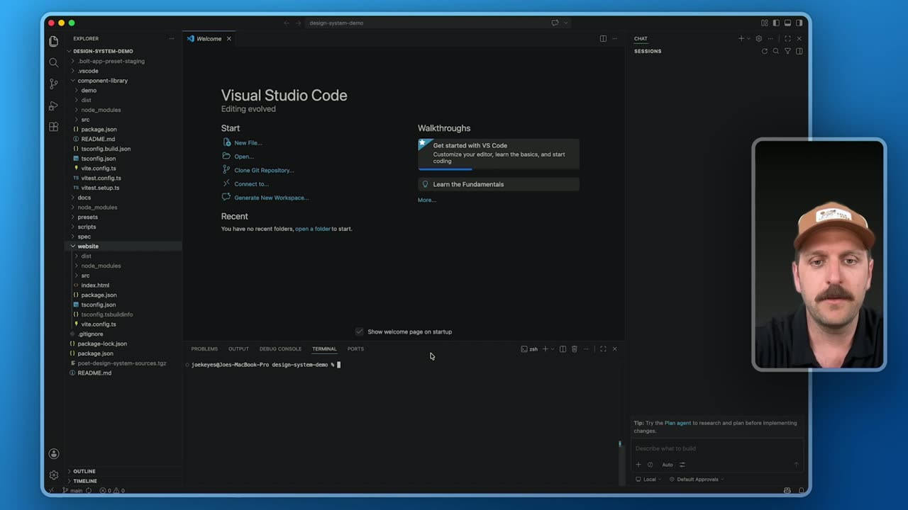
Official description
AI-powered app creation is changing what teams can build, but speed alone isn’t enough for the enterprise. See how Bolt integrates with Microsoft tools to move from context and conversation to secure, production-ready applications. Learn how to establish shared design systems, define approved assets and environments, and enable teams to iterate and ship features within governance guardrails—accelerating delivery without sacrificing security or code quality.
Summary
Overview
This session demonstrates how Bolt, integrated with Microsoft Azure and Microsoft 365, enables enterprise teams to move from AI-driven prototyping to governed, production-ready applications. The presenters argue that speed alone is insufficient for enterprises, and show how Bolt fits into existing applications, design standards, and security requirements while keeping developers in control of code, foundations, and deployment paths.
Key announcements
- Bolt integration with Microsoft Copilot (00:03:34
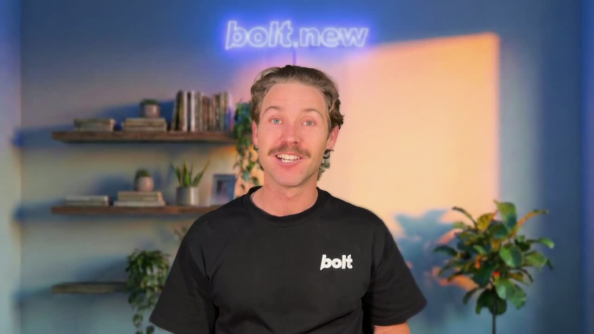
m05s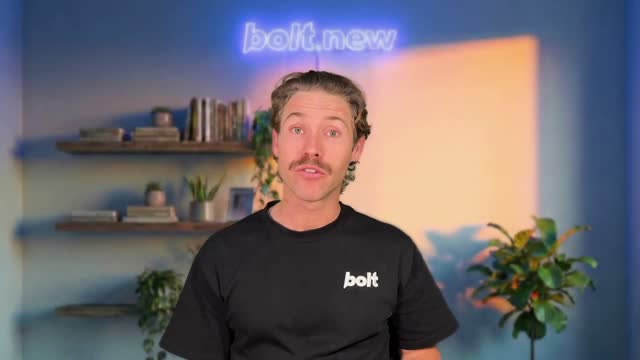
m10s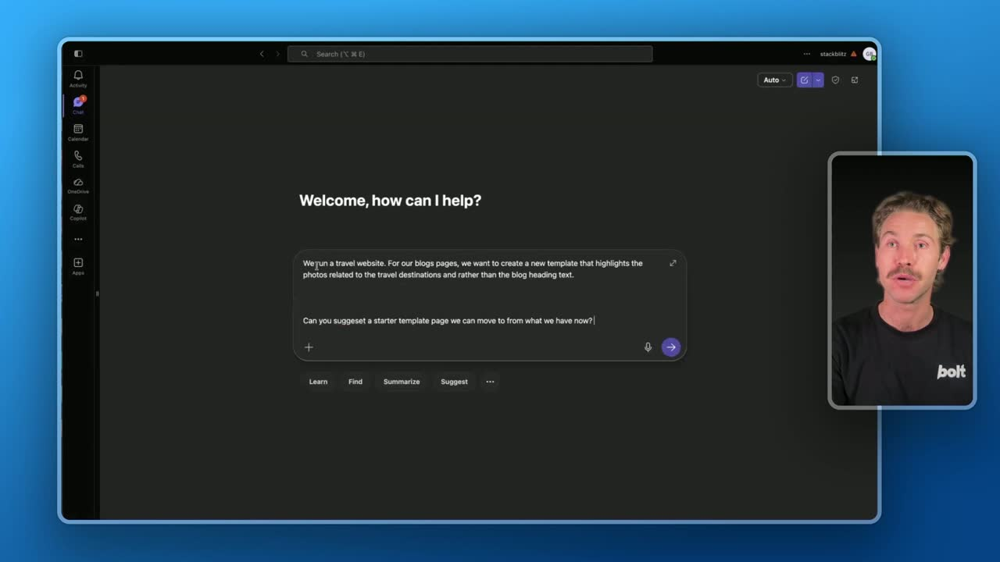
p05s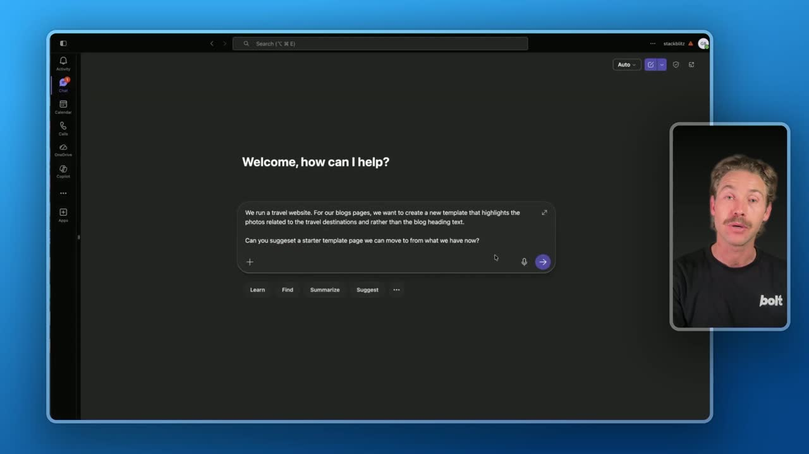
p10s): Teams can structure a project brief in Microsoft Copilot and tag the Bolt agent directly to send specifications over and trigger a build without losing requirements. - Bolt CLI for programmatic interaction (00:02:49m05s
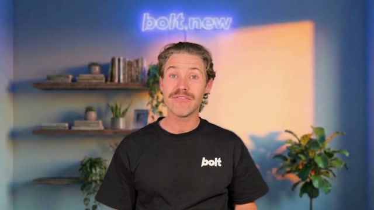
m10sp05sp10s): Developers can bundle a local component library, connect existing repos and workflows, and publish an approved design system into Bolt. - Design systems as a shared foundation (00:08:00
 m05s
m05s m10s
m10s p05s
p05s p10s): Bolt can ingest code, design artifacts, and documentation to generate a navigable Storybook instance so new projects start from approved components rather than a blank canvas.
p10s): Bolt can ingest code, design artifacts, and documentation to generate a navigable Storybook instance so new projects start from approved components rather than a blank canvas. - Plan mode (00:12:32
 m05s
m05s m10s
m10s p05s
p05s p10s): An agent mode that previews what will be implemented before building, intended to save time and tokens.
p10s): An agent mode that previews what will be implemented before building, intended to save time and tokens. - Built-in database security scan (00:14:44
 m05s
m05s m10s
m10s p05s
p05s p10s): Projects can be scanned for issues before publishing directly to a live site.
p10s): Projects can be scanned for issues before publishing directly to a live site.
{kind=link}
{kind=link}
{kind=link}
{kind=link}
{kind=link}
{kind=link}
{kind=link}
{kind=link}
Topics covered
- Limitations of blank-canvas AI app builders for enterprises with existing applications and governance
- Fitting AI-generated code into Azure, GitHub, and Azure DevOps workflows with Microsoft identity and security tooling
- Turning conversations and requirements into a structured project brief via Copilot
- Packaging a local component library (as a tarball or via a private NPM/MPM registry) for reuse across projects
- Real-time team collaboration: shared project URLs, agent chat visibility, and queued comment-driven fixes
- Adding user authentication, email/Google sign-in, user management, and databases to a generated app
- Creating a server function that calls an external model API, with secure secret storage for API keys
Notable quotes
"The developer problem is not just, can AI generate an app? It is, can this fit into what we already have?" — Will
"The core value proposition here is that we're starting to take some of the overall non-deterministic qualities of the agents, remove some of that and give you back the control of actually what's produced." — Joe
"So Bolt is not just a faster way to generate an app, but it's a controlled path from idea to application." — Will
Products and tools mentioned
- Bolt (bolt.new)
- Bolt CLI
- Microsoft Azure
- Microsoft 365
- Microsoft Copilot
- GitHub
- Azure DevOps
- Visual Studio Code
- Storybook
- OpenAI GPT-5 [inferred]
- Claude Opus 4.7 [inferred]
- NPM private registry
Speakers featured
- Will (William Sayer), Bolt
- Joe (Joe Keyes), Bolt — speaking from the developer's perspective
Follow-up resources
- Bolt YouTube channel (bolt.new)
Frames
{kind=link}
{kind=link}
{kind=link}
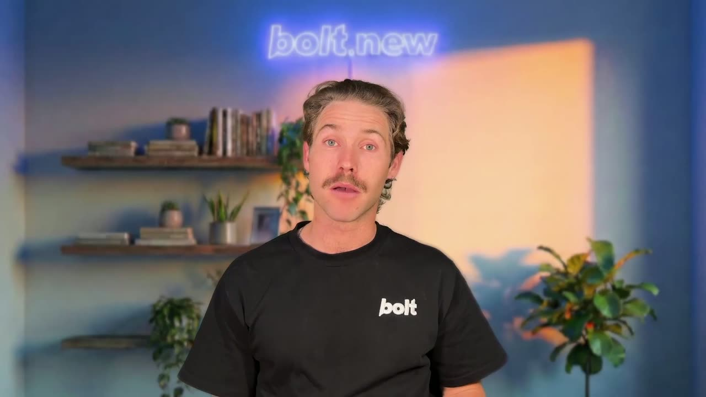
{kind=link}
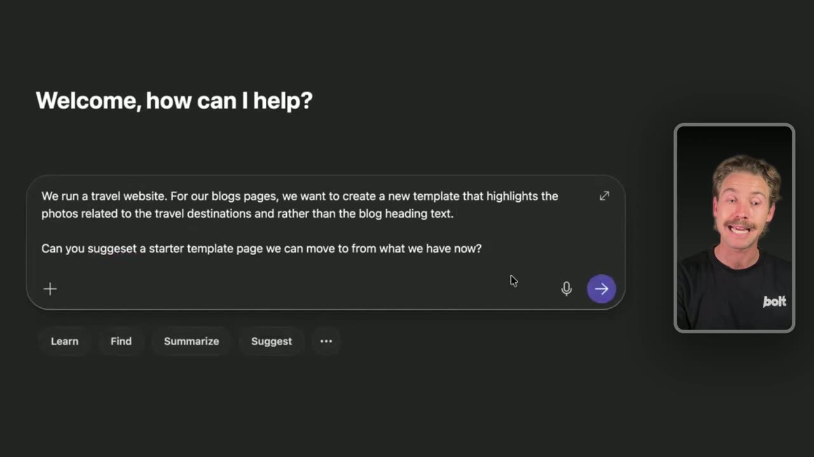
{kind=link}
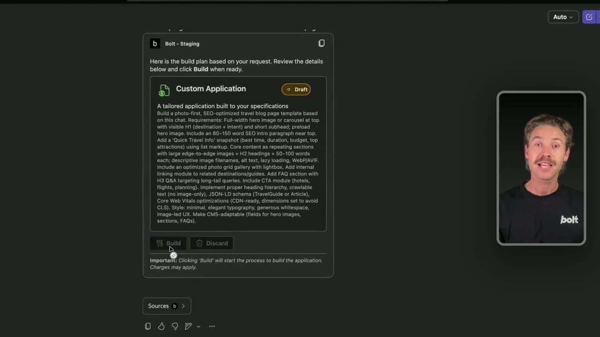
{kind=link}
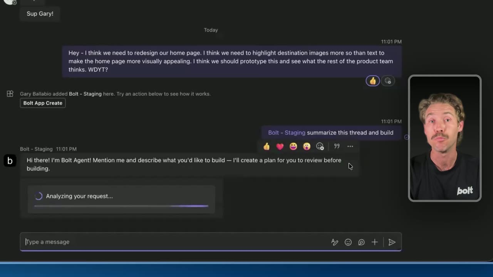
{kind=link}
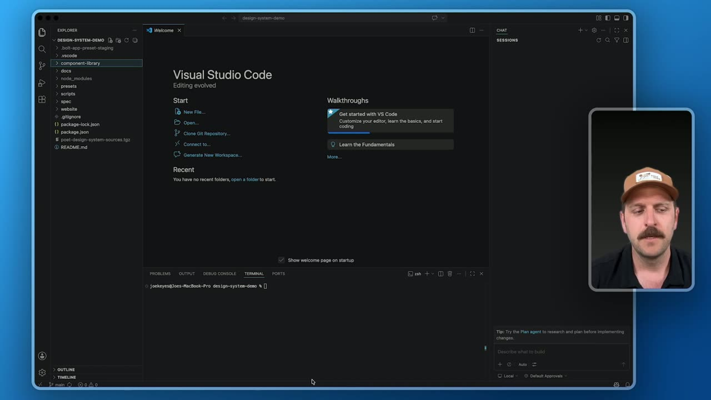
{kind=link}
{kind=link}
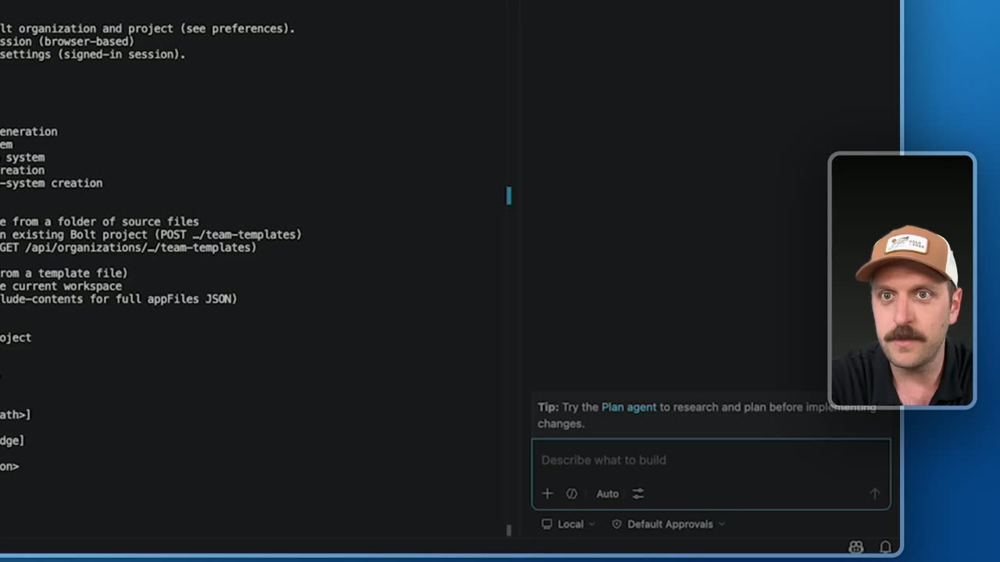
{kind=link}
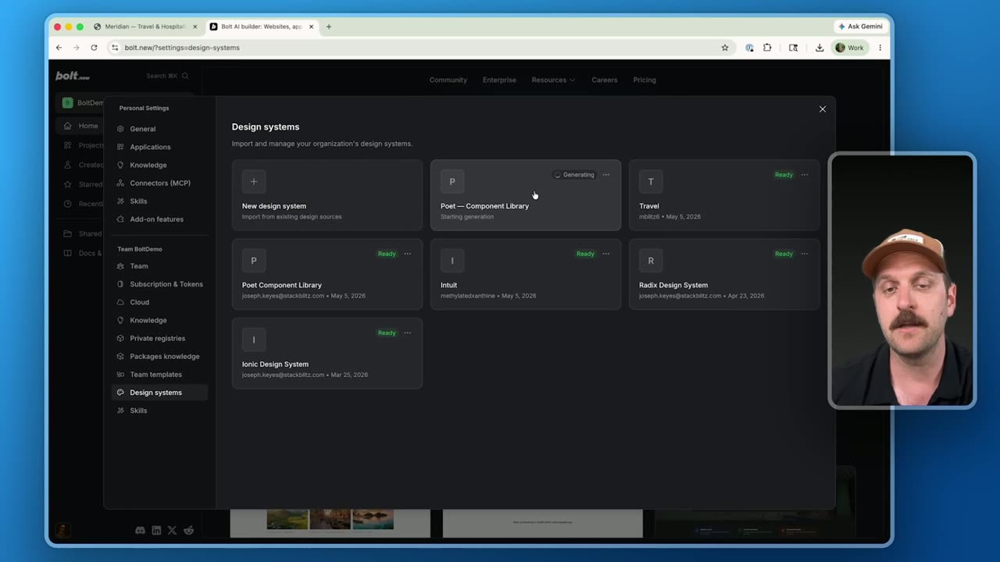
{kind=link}
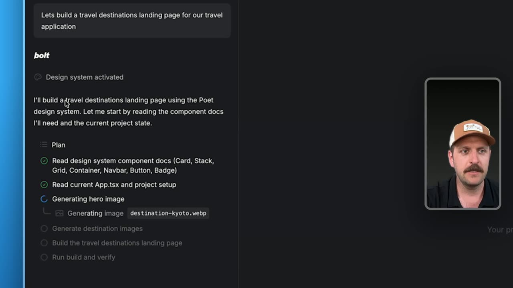
{kind=link}
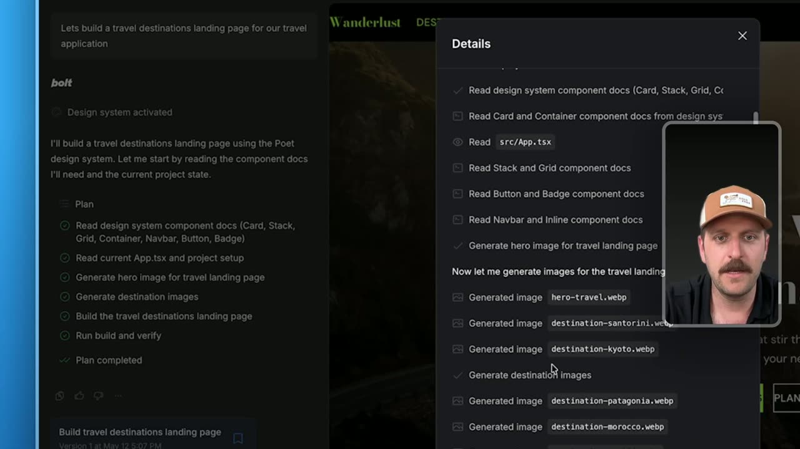
{kind=link}
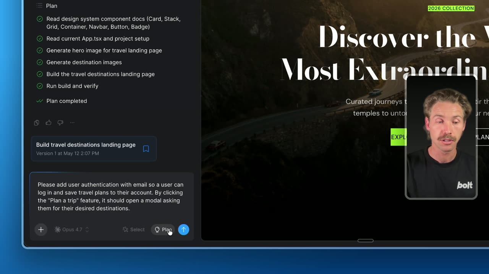
{kind=link}
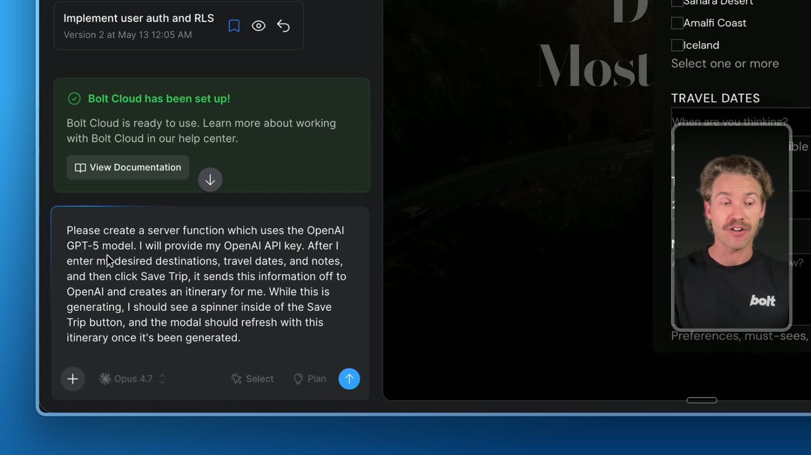
{kind=link}
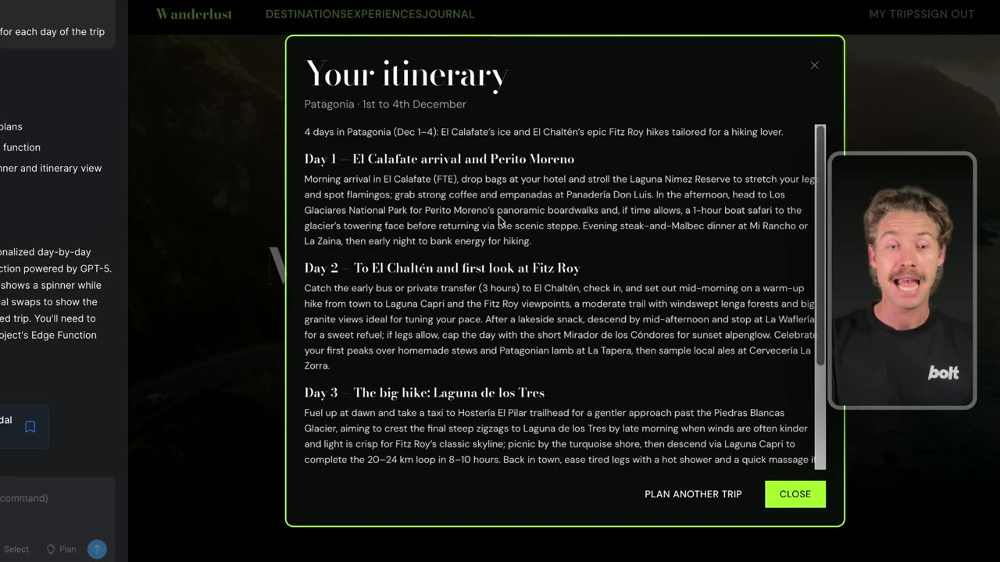
Transcript
Show / hide transcript (23,048 chars)
[00:00:02] Will: Hi, I'm Will from Bolt. [00:00:04] In this video, you'll learn how Bolt fits [00:00:06] into Microsoft Workflows to help you turn ideas into governed, [00:00:09] production-ready applications. [00:00:11] Then, my colleague, Joe, and I will demo three key features [00:00:15] which enable this process. [00:00:16] Prompt-driven development has already changed what individual [00:00:19] creators can do. [00:00:20] A product manager, designer, or developer can describe an idea [00:00:24] and quickly get a working prototype, internal tool, [00:00:27] or new feature on screen. [00:00:29] That speed is powerful because it shortens the distance [00:00:31] between an idea and something people can actually use. [00:00:35] But for enterprise teams, speed on its own is not enough, [00:00:39] especially for the developers and IT teams responsible [00:00:43] for what happens after something is generated. [00:00:46] Most AI app building tools assume you are starting [00:00:49] from a blank canvas. [00:00:51] That is useful for prototypes and some internal tools, [00:00:53] but it's not how most enterprise software works. [00:00:56] Large organizations already have existing applications, [00:01:00] governed cloud environments, developer workflows, [00:01:03] design standards, and security requirements. [00:01:06] So the developer problem is not just, can AI generate an app? [00:01:10] It is, can this fit into what we already have? [00:01:13] Contains increment existing applications, [00:01:15] add features safely, and give developers code [00:01:18] that they can review, govern, [00:01:20] and deploy without rewriting everything from scratch. [00:01:23] The real question for a Microsoft build audience is, [00:01:26] how do you make AI-powered app creation faster while keeping [00:01:30] developers in control of the code, approved foundations, [00:01:34] environments, and deployment path? [00:01:37] That is exactly what Bolt's collaboration [00:01:39] with Microsoft is designed to support. [00:01:42] With Bolt on Microsoft Azure and Microsoft 365, [00:01:46] teams start from the conversation [00:01:48] and context they already have, then move towards applications [00:01:51] that fit inside the infrastructure they [00:01:53] already trust. [00:01:55] Bolt-generated front-end code can be reviewed, extended, [00:01:58] and deployed into Azure. [00:02:00] Teams can connect that work into their GitHub [00:02:02] and Azure DevOps workflows, Microsoft identity [00:02:06] and security tooling and the governance patterns enterprise [00:02:09] developers already use. [00:02:11] That means developers don't have to be the first person prompting [00:02:14] in Bolt to benefit from it. [00:02:15] They can define the standards, approve foundations, [00:02:18] environments, and deployment path [00:02:20] so creators can move faster while the output still fits the [00:02:24] organization's technical foundation. [00:02:26] So Bolt is not just a faster way to generate an app, [00:02:29] but it's a controlled path from idea to application. [00:02:33] The three pieces we'll cover in the demo are design systems. [00:02:37] This gives every team a shared foundation. [00:02:39] An organization can make its approved design system available [00:02:43] in bulk so every project starts with the right components, [00:02:46] patterns, and brand standards instead of a blank canvas. [00:02:49] The second is the Bolt command line interface. [00:02:52] This gives developers a programmatic way [00:02:55] to interact with Bolt. [00:02:56] They can bring in approved assets, connect existing repos [00:03:00] and workflows, and make the organization's technical [00:03:03] standards available to the broader team. [00:03:05] Finally is the Bolt interface. [00:03:07] This gives everyone on the team an intuitive, [00:03:10] capable place to build. [00:03:12] Product managers, designers, operators, [00:03:14] and developers can prompt, iterate, [00:03:16] and create features while still working within the foundations [00:03:19] that developers have approved. [00:03:21] The goal is simple. [00:03:22] Accelerate app creation for the whole organization while [00:03:25] preserving governance, security, and developer standards. [00:03:29] So let's dive in. [00:03:30] The first thing we'll look [00:03:31] at is how the work starts before anyone opens Bolt. [00:03:34] We'll begin in Microsoft Copilot, a tool I'm sure a lot [00:03:38] of you are very familiar with. [00:03:39] Here, a team can turn a conversation, [00:03:41] set of requirements, or early product idea [00:03:43] into a clear project brief. [00:03:45] Here is our initial prompt. [00:03:46] We run a travel website. [00:03:48] For our blog post, we want to create a new template [00:03:50] that highlights the photos related [00:03:52] to the travel destinations rather [00:03:54] than the blog heading text. [00:03:55] Can you suggest a starter template page we can move [00:03:58] to from what we have now? [00:04:00] And we'll send this off to the Copilot agent. [00:04:02] Straight away, Copilot is providing a variety of ideas. [00:04:05] It's coming up with design goals, [00:04:06] a layout structure, UI ideas, and more. [00:04:09] This is the planning layout [00:04:10] where Copilot helps capture the goal, the audience, [00:04:13] the user needs, constraints, success criteria, [00:04:17] and any other technical or brand requirements [00:04:19] that should shape the application. [00:04:21] Now, let's say, for example, you want to focus on SEO. [00:04:24] Here's our prompt. [00:04:25] Optimize this for SEO. [00:04:27] It's adding a hero section, an SEO intro, [00:04:30] structured snapshot, and more. [00:04:31] Now that we're happy with that, let's tag the Bolt agent. [00:04:34] Summarize this conversation in a prompt for Bolt. [00:04:39] It outlines the plan. [00:04:41] Let's tag Bolt again and ask it to build [00:04:43] with these specifications. [00:04:45] Copilot connects directly with Bolt. [00:04:48] Here we can select "Build." [00:04:49] Just like that, this prompt will be sent over to Bolt, [00:04:52] and the project will start to build. [00:04:54] Let's have a look at it. [00:04:55] Jumping over into Bolt, we can see it's created the project [00:04:57] with a full hero carousel, focusing on the images, [00:05:00] just like we requested. [00:05:02] Looking through the agent history, [00:05:03] we can see it's executed this plan [00:05:05] and it's put a focus on SEO. [00:05:07] Now we're in full screen preview. [00:05:09] We can scroll down and inspect the page that it built. [00:05:12] It has hover animations and nice finishing touches [00:05:15] like these chapters and zoom on hover. [00:05:17] Here's the complete guide to Kyoto, a nice bento grid here [00:05:21] to show photos of the place, and an elegant preview [00:05:24] of related destinations. [00:05:26] Now, let's say we want these destinations to have more [00:05:29] of a focus on the image. [00:05:30] Let's have a discussion with one of our colleagues [00:05:32] about this specific page. [00:05:34] They may suggest something, we may suggest something back. [00:05:37] We can simply tag the Bolt Agent here to look [00:05:40] through our conversation [00:05:41] and make those changes in our project. [00:05:44] Now the Bolt Agent is going [00:05:45] to highlight the destination images more and put more [00:05:48] of a focus on the image than the text. [00:05:50] Let's click "Build," and now [00:05:52] that that's built, let's preview it. [00:05:54] Jumping back into the Bolt preview, if we scroll [00:05:56] down to the "Related Destination" section, [00:05:59] now we can see instead of that three column grid [00:06:02] that we have just one column, putting much more of a focus [00:06:05] on the background image for each of these destinations. [00:06:09] By creating this brief, going back and forth with Copilot, [00:06:12] we've given the team a shared source [00:06:13] of truth before we build the project. [00:06:16] Copilot helps structure the intent [00:06:18] of the project using context of our organization. [00:06:21] With the direct Bolt integration, [00:06:22] it means no lost requirements, decisions, or constraints [00:06:26] that were already captured. [00:06:27] Plus, as you just saw, we can directly tag the Bolt Agent [00:06:30] in our direct messages. [00:06:32] Now I'm going to hand it over to Joe, and he's going [00:06:34] to show the developer's perspective. [00:06:36] Joe: Hey, Joe from Bolt here. [00:06:37] As a developer, I often get requests [00:06:39] from our product management team to be able to work with code [00:06:43] and components that we've already put together [00:06:45] as a development team. [00:06:46] Now in the modern era with a lot of these design tools [00:06:49] and vibe tools and all these different systems [00:06:52] within AI gives us the ability to work in a whole bunch [00:06:54] of different contexts. [00:06:55] And what we want to do today is actually show an example [00:06:58] with Bolt where I can take a component library that I have [00:07:01] in my local environment, send it off to Bolt [00:07:03] where a Bolt Agent will then be able to use [00:07:05] that to effectively build out new internal applications [00:07:09] or other examples or prototypes with that specific code. [00:07:13] So what I'm going to do here is we'll open up our [00:07:14] VS Code instance and just to give you a sense [00:07:17] of what this project entails, [00:07:18] it's a small little component library, a set of components. [00:07:21] And we have a website that we're working with. [00:07:23] This is the demo site, and you can see it here. [00:07:26] It's a small little travel application. [00:07:28] It's got some different destinations and things [00:07:31] that we can see and just inquire about. [00:07:33] So really, the content of the site is not the core thing [00:07:36] that we're interested in, but we're interested in the process [00:07:38] of actually sharing this with other members in the team [00:07:41] to be able to prototype using the code [00:07:43] that I've already pre-built. [00:07:44] So to do this, we're actually going to use this Bolt CLI. [00:07:47] So let's go ahead and first take a look at the Bolt CLI [00:07:50] and what it can actually do. [00:07:51] And then we'll go through the process of using Copilot [00:07:54] to kick off some of that integration. [00:07:56] So right out of the gate, you'll see there are a few things [00:07:58] that this Bolt process can actually do for us. [00:08:00] First and foremost, we actually can bundle [00:08:02] and create a design system. [00:08:04] What this will do, and I'll show you in Bolt just momentarily, [00:08:07] is it'll actually go through and make sense of your code, [00:08:09] any design artifacts or documentation that you give it [00:08:12] to be able to make sense of clearly how to work [00:08:15] with your code and your design system components [00:08:17] to then effectively be able to build new applications on top [00:08:21] of that existing material. [00:08:23] The core value proposition here is that we're starting [00:08:25] to take some of the overall non-deterministic qualities [00:08:28] of the agents, remove some of that [00:08:31] and give you back the control of actually what's produced [00:08:33] and what code is overall used as part of the system. [00:08:37] So we'll go ahead and we're going to prompt now. [00:08:40] We'll go into over here into "Chat." [00:08:45] So I already have a little skill that just wraps on top [00:08:47] of the Bolt CLI to provide some context [00:08:49] about these specific tools. [00:08:51] What we're going to do is we're going to say, let's go ahead [00:08:54] and use the Bolt CLI to create a design system [00:09:02] and publish it within Bolt. [00:09:05] So we'll go ahead and we'll kick this off. [00:09:07] Now we're back. [00:09:08] The chat has completed here with the agent in Copilot. [00:09:12] You'll see that we've actually now created a design system [00:09:15] inside of Bolt. [00:09:16] So let's go ahead and take a look at what we created inside [00:09:19] of Bolt, and then we'll start to go through the process [00:09:21] of how we can share this with the rest of the team. [00:09:24] So we're going to head over now to bolt.new. [00:09:27] I'm going to go down to my personal profile first [00:09:29] and foremost. [00:09:29] We'll go to "Settings." [00:09:30] We're going to head over to our design system. [00:09:32] And just to show you, this is actually what we've done now is [00:09:35] we've kicked off this process where we have an agent [00:09:37] within Bolt that is starting to get trained [00:09:39] and understand the specificities [00:09:41] about your specific component library and your design system. [00:09:45] Now, I did this in advance just so we don't have to sit here [00:09:47] and wait and see this, and we'll go ahead and open this up. [00:09:49] And you'll see what it actually did is it went through [00:09:52] and created us a storybook instance that I can now traverse [00:09:55] and start to navigate and see the components [00:09:57] that I'm working with. [00:09:58] I can see them in context, but even more so, [00:10:00] we can actually now use this as a catalyst to be able to build [00:10:03] out new internal applications or prototypes using the code [00:10:07] that the team has already put together. [00:10:08] So let's now walk through that process. [00:10:10] We'll go ahead and close this. [00:10:12] Here within our prompt, we can go ahead [00:10:14] and select "Design Systems." [00:10:16] I'm going to grab this Poet Component Library." [00:10:19] And what we're going to do now is let's build a travel [00:10:24] destinations landing page for our travel application. [00:10:30] Great. So we'll go ahead and kick this off. [00:10:33] All right. [00:10:33] So now we can actually see that the Bolt agent has started [00:10:36] to invoke the design system abilities, [00:10:38] and it's building us a travel application based upon all [00:10:41] of the content we provided as part of the design system [00:10:44] or the component library that we've packaged into Bolt. [00:10:47] Now, one of the key things [00:10:48] that we can actually do is we can start to look at some [00:10:50] of the code that's being generated. [00:10:51] And the really specific thing [00:10:53] that is important is we can take a look at the package.json file [00:10:56] and show you that I've bundled and provided a tarball file [00:11:00] for the actual component library [00:11:02] that we were working locally within VS Code. [00:11:04] Now, I could pull this [00:11:05] from a private MPM registry if I wanted to. [00:11:07] That's certainly something you can set up as part [00:11:09] of the projects here within Bolt, down within our package [00:11:12] and private registries. [00:11:14] But for this conversation, [00:11:15] what we did is we just actually bundled this up and dropped it [00:11:17] into Bolt, and now we can use this [00:11:19] and provision this right out of the gate. [00:11:21] It gives us abilities to really quickly share this [00:11:23] across a number of applications and a number [00:11:25] of different circumstances rather quickly. [00:11:27] All right, so it does look like we've completed here. [00:11:30] Again, just to recap. [00:11:31] So we went ahead and we kicked off this prompt using our design [00:11:34] system, so that's actually provided us the ability [00:11:37] to use all of the code and components that we've seeded [00:11:40] from our local environment. [00:11:41] So we went straight from our VS code instance [00:11:44] through Copilot and into Bolt. [00:11:46] Now, this code is something the PMs can actually pick up [00:11:49] and build out applications with in advance. [00:11:53] You'll see it's gone through. [00:11:54] It's got a nice little app. [00:11:55] Generate us a number of different things [00:11:57] and we can hand this off to the team. [00:11:58] And this is where I'll give it back to Will [00:11:59] and he'll be able to work from here. [00:12:01] Will: Great. [00:12:01] Thanks for that, Joe. [00:12:02] Now with Bolt, collaboration amongst your team members is [00:12:05] simple and easy. [00:12:06] By sharing the project URL, I can access it [00:12:08] and we can both access the agent chat in real time, [00:12:11] seeing who is prompting and when. [00:12:12] We can also collaboratively comment on parts of the project [00:12:15] and queue fixes we want the Bolt Agent to make. [00:12:18] Let's now add user sign-in and authentication to this site. [00:12:21] Here's our prompt. [00:12:22] Please add user auth with e-mail so a user can log in [00:12:24] and save travel plans to their account. [00:12:26] By clicking the plan a trip feature, [00:12:28] it should open a modal asking them [00:12:30] for their desired destinations. [00:12:32] I'll choose "Opus 4.7" as my modal. [00:12:34] Let's put it in plan mode and build. [00:12:36] Plan mode is a great way to see what the agent wants [00:12:39] to implement before it actually does so, [00:12:40] often saving you time and tokens. [00:12:43] A minute later and the Bolt Agent has generated this plan. [00:12:45] It's going to set up a database with authentication, [00:12:48] the plan a trip modal, and more. [00:12:50] It's not asking us any clarifying questions, [00:12:52] so let's go ahead and implement. [00:12:54] The agent's finished working, so let's test it out. [00:12:56] Let's create an account, and now we're signed in. [00:12:59] We can easily see the database by clicking on this icon [00:13:01] up here, our user authentication with e-mail sign-in enabled. [00:13:05] We can also enable Google sign-in. [00:13:07] We have our user management showing all the users [00:13:09] that have created accounts. [00:13:10] There's file storage, secrets, analytics, domains [00:13:14] and hosting, and more. [00:13:16] Let's test out the feature we just requested, [00:13:18] plan a trip, and here we go. [00:13:20] Using the same design system as the rest of the site, [00:13:22] it's now asking us for our travel destinations. [00:13:24] Now let's see how easy it is to add something [00:13:26] like a server function. [00:13:28] Here's our prompt. [00:13:29] Please create a server function [00:13:30] which uses the OpenAI GPT-5 model. [00:13:33] I will provide my OpenAI API key. [00:13:35] After I entered my desired destinations, travel dates, [00:13:38] and notes, and I click "Save Trip," [00:13:40] it should send this information off to OpenAI [00:13:42] and create an itinerary for me. [00:13:44] While this is generating, I should see a spinner inside [00:13:47] of the "Save Trip" button, and the modal should refresh [00:13:49] with this itinerary once it's been generated. [00:13:52] Let's go "Plan Mode" and "Send." [00:13:54] The plan is finished. [00:13:55] It's asking us these clarifying questions, [00:13:57] which we will answer them. [00:13:59] We'll turn it off plan mode and build. [00:14:01] The agent's finished working and notice now it's asking us [00:14:04] for our OpenAI API key. [00:14:06] So let's go into our "Secrets." [00:14:08] We're going to paste my API key, "Create Secret," [00:14:11] and that is securely saved. [00:14:13] Let's test it out. [00:14:14] Plan a trip. [00:14:15] So here's our travel plan. [00:14:16] Patagonia from the 1st to the 4th of December [00:14:19] with two travelers and I love hiking. [00:14:21] Save trip. [00:14:22] Generating itinerary. [00:14:24] And there we go. [00:14:24] In one prompt, it's successfully been able [00:14:26] to create a server function that is called the OpenAI API, [00:14:30] and it's generated a travel itinerary for these four days [00:14:33] that we'll be spending in Patagonia. [00:14:35] You could see what it's done in two prompts. [00:14:37] This is just a taste of what the Bolt agent can do. [00:14:40] We can now collaborate and share this amongst team members, [00:14:42] or we can publish it directly. [00:14:44] With an inbuilt database security scan, [00:14:46] we can see there are no issues, so let's go ahead and publish. [00:14:50] Let's view the live site. [00:14:51] And there we go. [00:14:52] Now our site's ready to be viewed by our customers. [00:14:55] And that just about brings us to the end of our demo today. [00:14:58] We've learned how to build with your enterprise design system, [00:15:01] programmatically interact with Bolt using the CLI, [00:15:03] and also use the Bolt interface. [00:15:05] There's plenty more you can do with the Bolt interface, [00:15:07] so if you'd like to learn more, [00:15:08] go to our YouTube channel, bolt.new. [00:15:10] With the partnership between Microsoft and Bolt, [00:15:13] now you're able to bring all of your organization's context [00:15:16] in through Microsoft 365, the scalability and reliability [00:15:20] of Microsoft Azure plus the speed of bolt. [00:15:23] We hope you've enjoyed the video and thanks for watching.